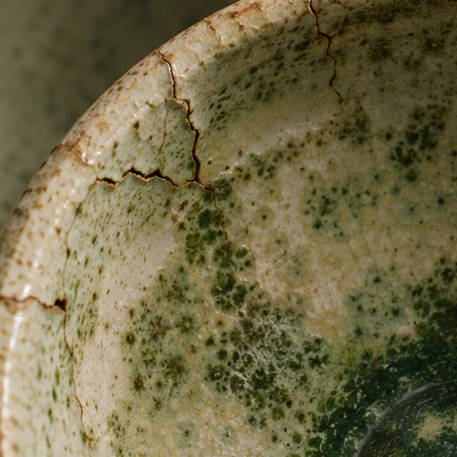

Fuel
Wood feeds the kiln. The fire and the way it moves through the chamber shape the firing environment.
Fire studies / Material essay
Wood changes a pot in ways a drawing cannot quite predict. Follow the trail from fuel to the finished surface.

Inspect the fired surface ↓Illustrations of embers and glaze.
Wood feeds the kiln. The fire and the way it moves through the chamber shape the firing environment.
Ash travels with the flame and settles on the pots. The operator describes its interaction with a glaze as a source of unexpected surface changes.
On a finished piece, compare glossy and quieter patches. What can the surface suggest about the pot’s position in the kiln?
A routine visit does not mean a firing will be taking place. The operator directs visitors to its own announcements for firing updates.